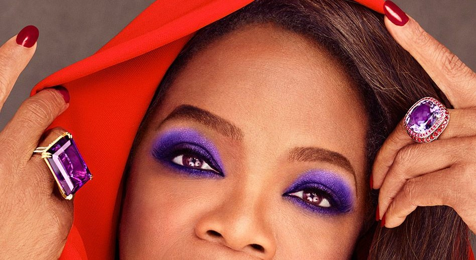
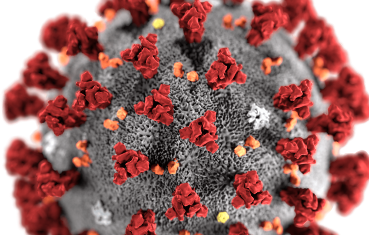

Watch What Disinformation You Eat

Trended at #1 on Twitter in March
Oprah had to debunk it herself
Confusion led to more and more attention being brought to it

Disinformation by China
China and European Union communicating to make matters better